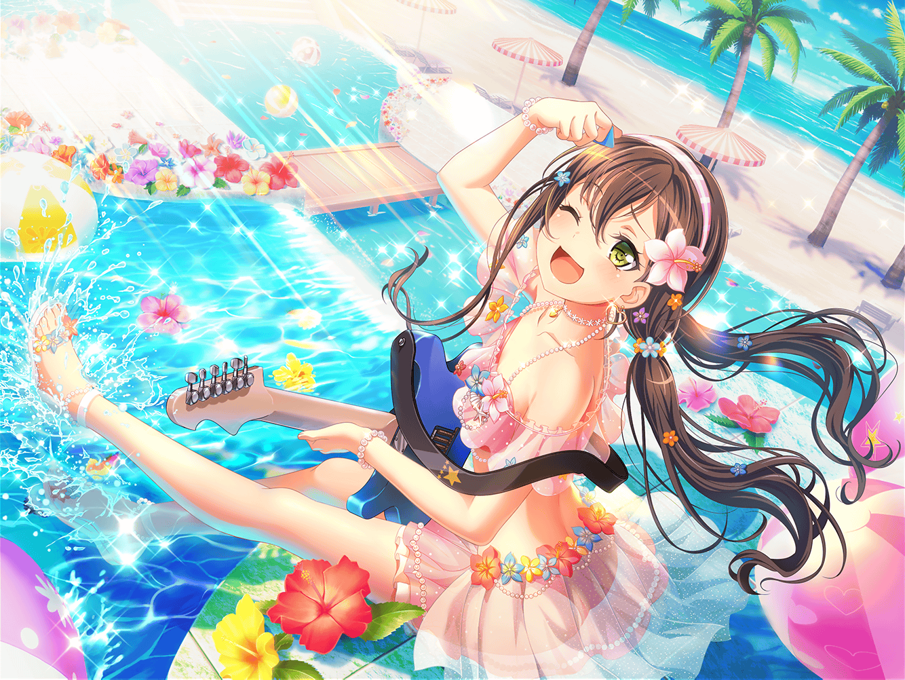

商店街
たえ
うわ、結構降ってる。
これはやむまで雨宿りかな……
たえ
買い物来た時は平気そうだったのに。
早くやめばいいけど……ん？
まりな
うわー、傘持ってくればよかったー！
……あれ？ たえちゃん？
たえ
こんにちは、{{userName}}さん、まりなさん
まりな
こんにちは。
どうしたの、お店入らないの？
たえ
出てきたところなんです。
買い物終わって出てみたら、この雨で
たえ
傘、持ってなくて。それで雨宿りです。
まりなさん達は、これからお仕事ですか？
まりな
ううん！ 今から休憩！
けど、この雨の中、傘もないのに
どこか行くのもねー……
たえ
そっか……あの、それなら、
雨がやむまでおしゃべりしませんか？
まりな
ふふ、もちろんいいよ！
ひとりで雨宿りなんて、退屈しちゃうもんね！
たえ
よく降るなあ……
でも、まさか降るなんて思ってなかったな〜。
朝は晴れてたよね？
たえ
だよね。
でも、雨が今日でよかった。
この前降ってたら台無しだったし……
たえ
そうそう、海に行った日。
晴れてよかった
まりな
そういえば確かに、すっごくいい天気だったよね！
たえ
おかげで、海を満喫できました。
有咲の写真もいっぱい撮ったし、みんなでたくさん遊んだし
たえ
海水の温度もちょうどよくて、
ずっと浸かってられそうなくらい気持ちよかったよ
たえ
かわいい魚と泳いだりしたし、ビーチバレーもしたし、
それからスイカ割り。
これがね、ホントすごかったんだよ
まりな
チーム対抗のスイカ割り大会なんだけど。
有咲ちゃんが割る役だったんだよね！
たえ
私は誘導する役。
私達ね、優勝だったんだよ！
有咲がすっごくキレイにスイカを割ったんだ
たえ
{{userName}}さんにも見せたかったな
まりな
ふふっ。有咲ちゃん、スイカを割った瞬間
すっごい喜んでたよね
たえ
うん、あれはちょっと意外だったかな。
有咲はわーって喜ぶの、
あんまり得意じゃないと思ってたから
たえ
……うん、そうだね。
確かに、そんなことないかも。
あのときの有咲、ホント嬉しそうだったもん
たえ
スイカも美味しかったし、
楽しい１日だったなあ
まりな
楽しかったよね〜……審査員、やってみてよかったよ。
あっ！ そうだ、キミにもおみやげ買ってあるんだった！
あとで渡すね！
たえ
あ、そういえば私も買ったんだ。
今度スタジオ行くときに持っていくね

たえ
……あ、雨やみましたね
たえ
お二人とも、付き合ってくれてありがとうございました。
それじゃ、おみやげ楽しみにしててくださいね